Hantavirus Descriptive Statistics
A deep dive into global epidemiological data with automated outlier detection and subgroup analysis.
Dashboard Overview
Goal: Transform raw global Hantavirus data into actionable insights through descriptive statistics.
Master Summary
Key statistics for all 8 numeric variables. Skewness > |0.5| → use median + IQR instead of mean + std.
| Variable | n | Mean | Median | Std | IQR | Skew | Kurtosis | Center | Spread |
|---|---|---|---|---|---|---|---|---|---|
| Incubation Days | 7538 | 20.41 | 19.00 | 8.07 | 12.00 | 0.47 | -0.49 | Mean | Std |
| Hospital Days | 7538 | 10.46 | 9.00 | 6.18 | 9.00 | 0.60 | -0.42 | Median | IQR |
| ICU Days | 7538 | 3.30 | 0.00 | 4.16 | 5.00 | 1.19 | 0.50 | Median | IQR |
| Temperature | 896 | 11.26 | 11.70 | 7.18 | 9.70 | -0.15 | -0.25 | Mean | Std |
| Rainfall | 896 | 252.83 | 195.35 | 217.76 | 237.10 | 1.80 | 5.05 | Median | IQR |
| Rodent Abundance | 896 | 0.67 | 0.67 | 0.18 | 0.30 | 0.02 | -1.12 | Mean | Std |
| Confirmed Cases | 939 | 1792.77 | 58.00 | 4470.37 | 415.00 | 2.82 | 7.14 | Median | IQR |
| Case Fatality Rate | 939 | 0.09 | 0.02 | 0.13 | 0.17 | 1.28 | 0.08 | Median | IQR |
Incubation Days
Finding: Right-skewed (skew=0.47), unimodal, lighter tails + flatter peak than normal. Mean=20.4d, Median=19d. Not normal.
Mistake fixed: Originally used beeswarm + KDE + sqrt-rule bins. Replaced with box+violin + integer-aligned bins + ECDF.
Subgroups: Incubation is similar across severity levels (~19d) but differs by syndrome — HPS (16d) vs HFRS (22d).
ECDF — Normal vs Log-Normal Overlay
The incubation data deviates from the normal CDF (red) but follows the log-normal CDF (green) more closely.
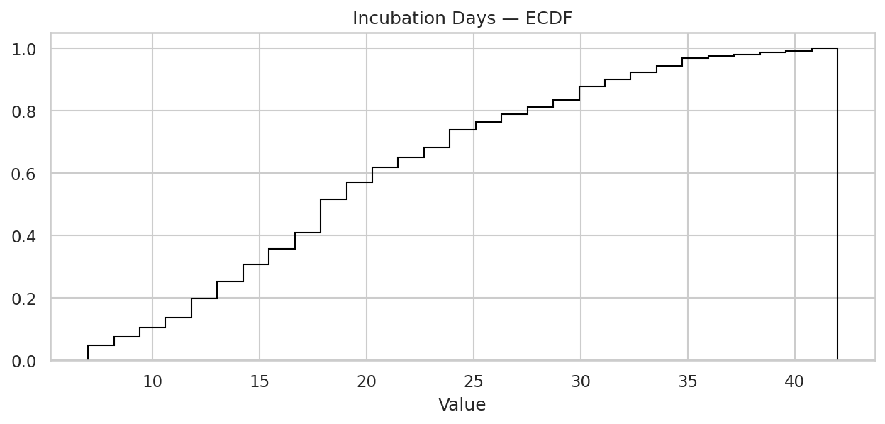
Hospital Days
Finding: Appears bimodal in aggregate — actually 4 unimodal severity groups cleanly separated.
Key discovery: Each severity level has a distinct, non-overlapping center.
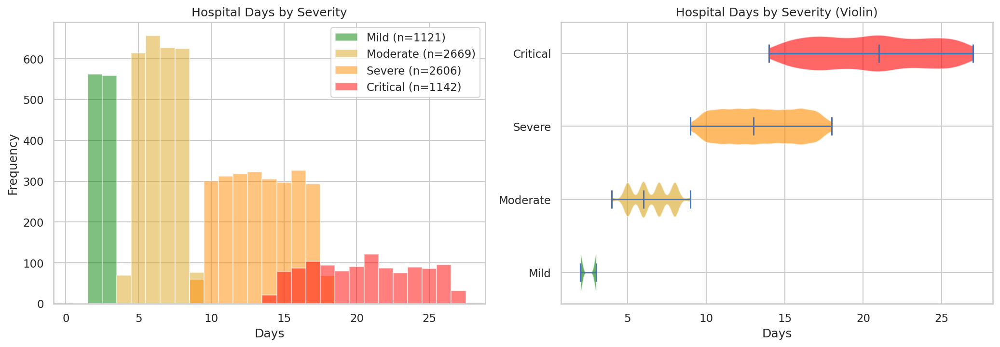
| Severity | n | Mean | Median | IQR |
|---|---|---|---|---|
| Mild | 1121 | 2.5 | 2 | 1 |
| Moderate | 2669 | 6.5 | 6 | 3 |
| Severe | 2606 | 13.5 | 13 | 5 |
| Critical | 1142 | 20.6 | 21 | 7 |
Lesson: Always check subgroups before describing a distribution. The "bimodal" shape was an aggregation artifact.
ICU Days — Spike-and-Slab Distribution
Finding: 50.3% of patients have icu_days = 0 (never admitted). Minimum ICU stay = 3 days.
Key discovery: ICU admission is perfectly predicted by severity:
| Severity | ICU Rate | ICU Days (median) |
|---|---|---|
| Mild | 0% | — |
| Moderate | 0% | — |
| Severe | 100% | 4 |
| Critical | 100% | 12 |
Approach: Split into two questions: (1) Who goes to ICU? (binary), (2) How long do they stay? (non-zero only).
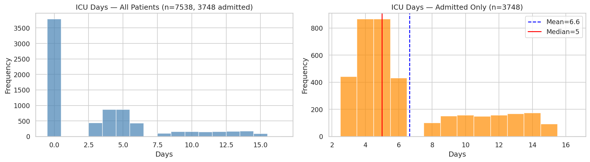
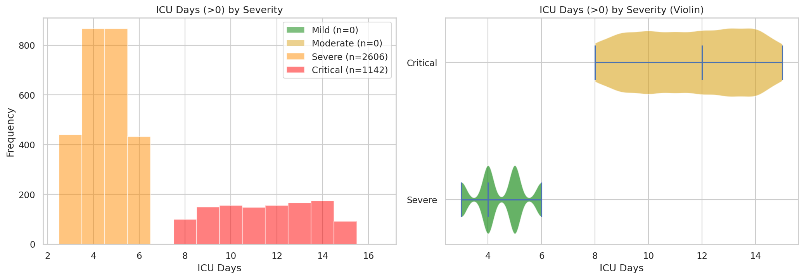
Temperature
Finding: Approximately normal (skew=-0.15). Mean=11.3°C, Median=11.7°C.
Only outlier: -8.8°C in Ostrobothnia, Finland (real, kept).
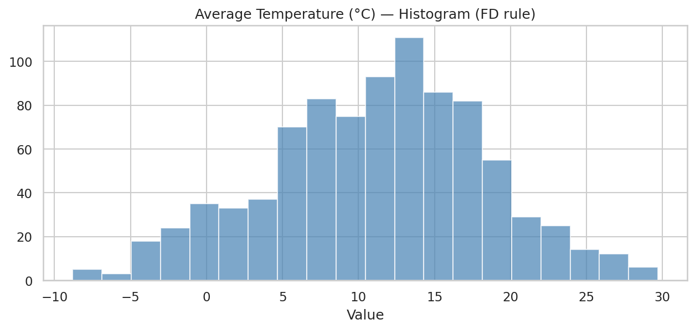
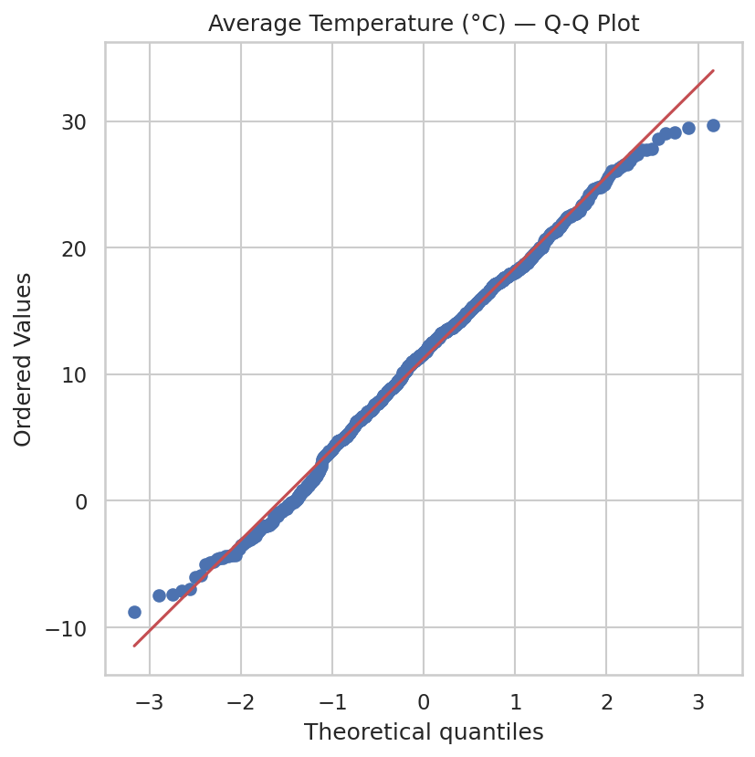
Rainfall
Finding: Right-skewed (skew=1.80), heavy-tailed (kurtosis=5.05). Biome explains 10x variation.
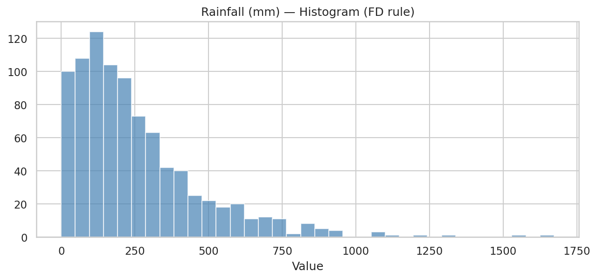
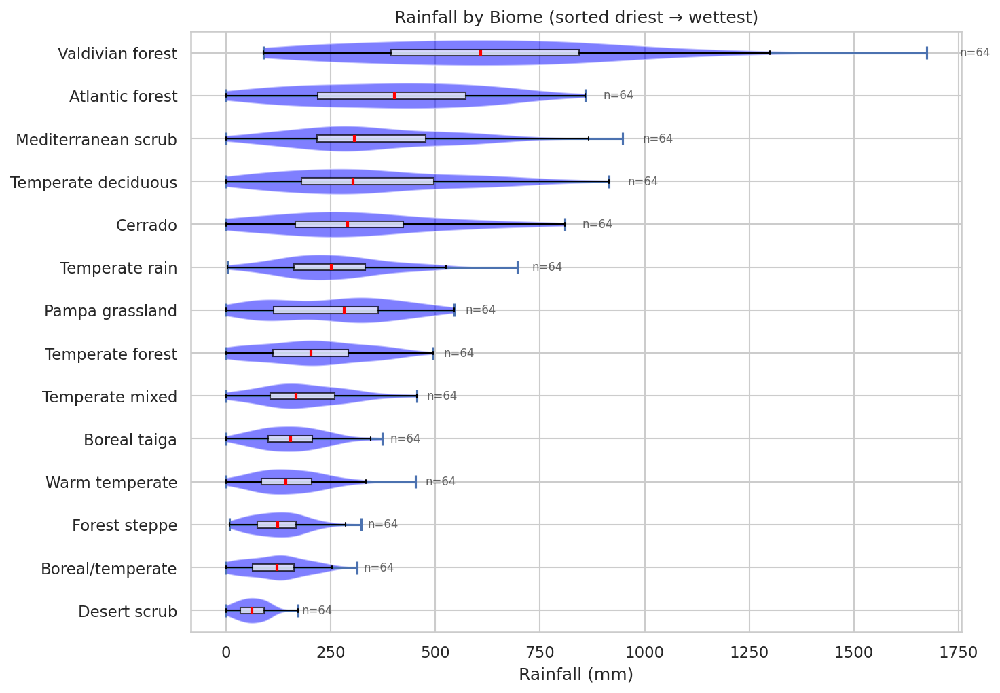
Rodent Abundance
Finding: Most symmetric variable (skew=0.02). Nearly constant across biomes (0.64–0.72 range).
Caveat: This assumes comparable sampling protocols across biomes.
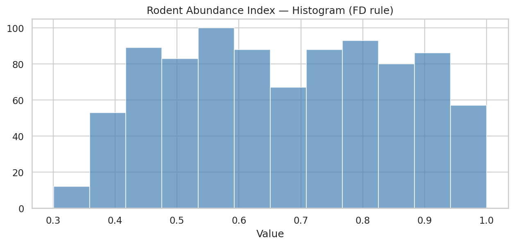
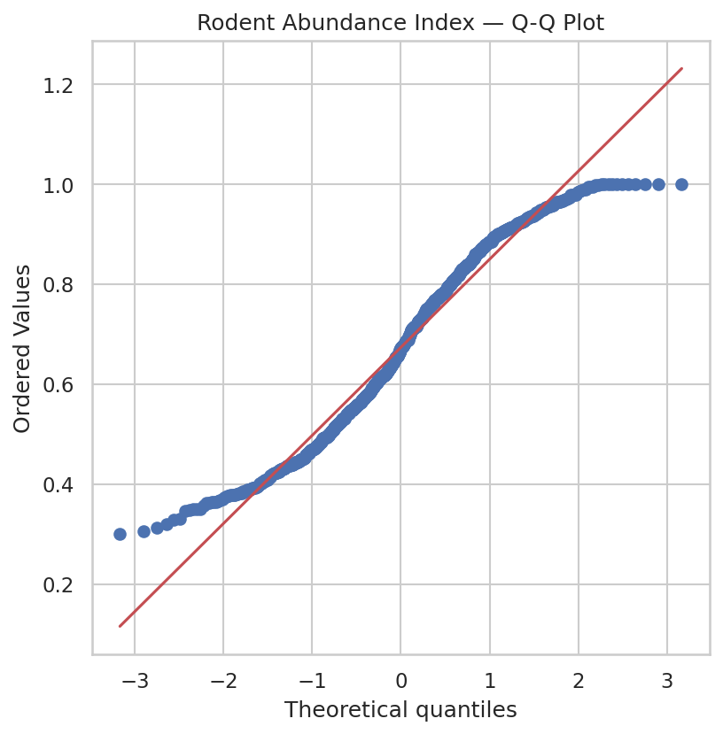
Confirmed Cases
Finding: Most extreme skew (skew=2.82). Mean=1793, Median=58 — mean is 31x the median.
Tail driven by: China HFRS (17k–24k cases/year, consistently since 1970s).
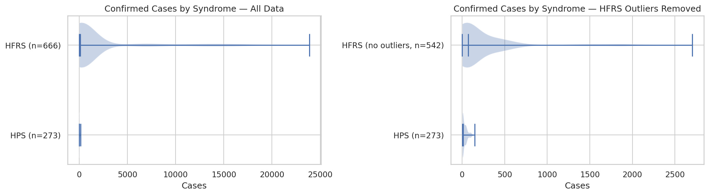
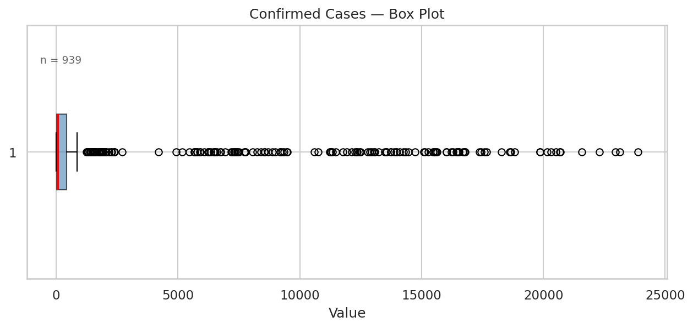
| Region | n | Mean | Median | Max |
|---|---|---|---|---|
| AMRO (Americas) | 273 | 30 | 13 | 146 |
| EURO (Europe) | 439 | 1,046 | 89 | 9,496 |
| WPRO (Asia) | 227 | 5,358 | 482 | 23,885 |
Question: Is the 100x gap real or underreporting? Consistent data across decades supports real biological differences in rodent host ecology.
Case Fatality Rate
Finding: Bimodal by syndrome. HPS (mean=28.1%) is 20x more lethal than HFRS (mean=1.4%).
Overall CFR of 9.2% represents neither group. Never report CFR as a single number.
Note: Differences may partly reflect healthcare access, not just virology.
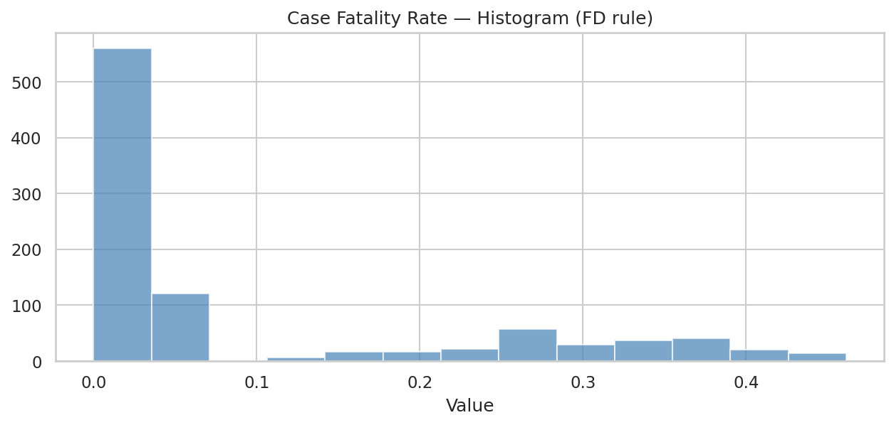
Comparative Analysis
Key comparisons across subgroups:
- Incubation by severity: No difference (~19d all levels) — surprisingly similar
- Incubation by syndrome: HPS (16d) shorter than HFRS (22d)
- Incubation by outcome: Deceased (17d) slightly shorter than Recovered (20d)
- Hospital by severity: Clean separation between all 4 levels
- Temperature by biome: Coldest to warmest — expected pattern
- Rainfall by biome: Desert (63mm) to Valdivian forest (630mm) — 10x range
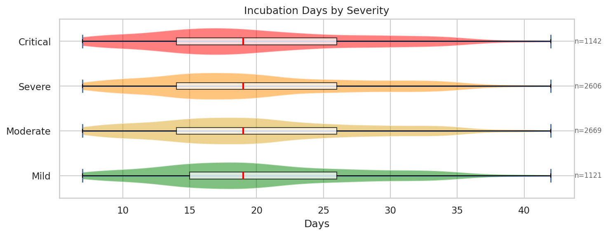
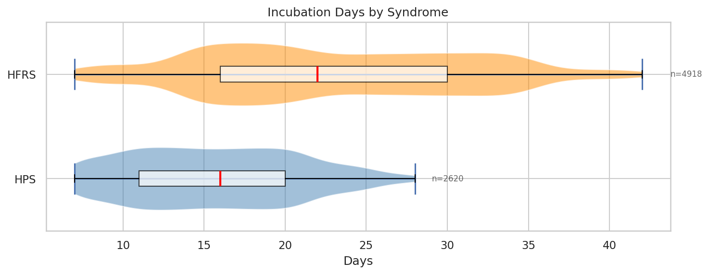
Bar Chart + Error Bar — Why It's Misleading
The bar chart (left) hides: sample size, distribution shape, multimodality, outliers, and the fact that mean ± SE assumes normal symmetry.
The violin + box (right) shows: n, min, Q1, median, Q3, max, shape, skew, tails.
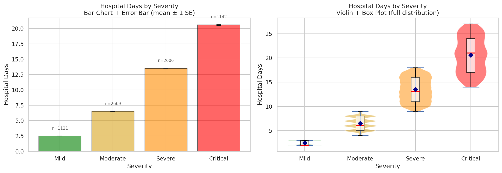
Mistakes Made and Fixed
| Mistake | Why It Failed | Fixed With |
|---|---|---|
| Beeswarm plot | No vertical spread — couldn't see density | Box + Violin plot |
| 86 histogram bins (sqrt rule on integers) | Empty bins between integers — "comb" effect | Integer-aligned bins; FD rule for continuous |
| KDE on discrete data | Density below 0; bandwidth subjective | Log histogram for continuous; skip for integer |
| Q-Q on bounded data | Always deviates at lower tail | ECDF + subgroup split |
| Describing shape without subgroups | Hospital days appeared bimodal | Check subgroups first |
| ECDF x-axis at -2000 | Cases can't be negative | Set xlim starting at 0 |